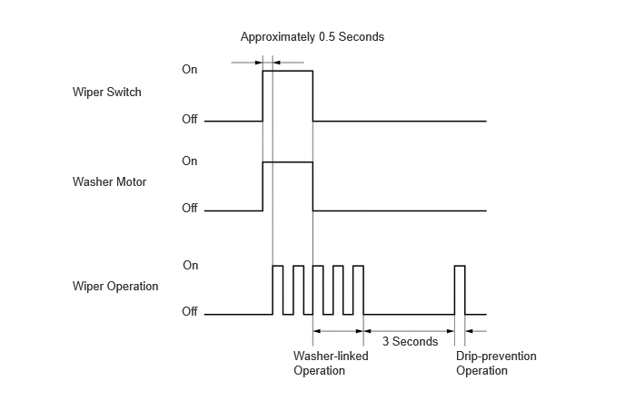
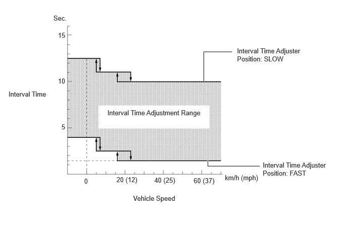
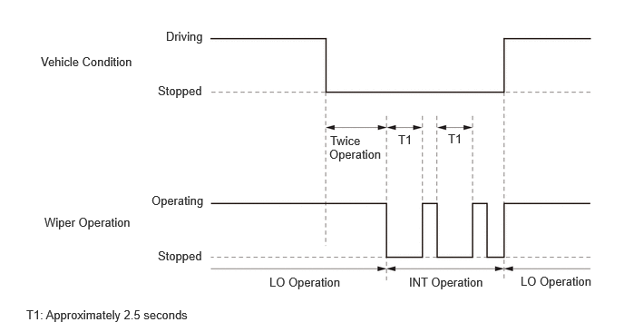

- Receives signals from various sensors and ECUs and sends them to the semiconductor power integration ECU.
- Receives signals from the semiconductor power integration ECU and outputs level warning signals to the meter.
| Last Modified: 10-07-2025 | 6.11:8.1.0 | Doc ID: NM100000002G7JW |
| Model Year Start: 2024 | Model: Tacoma | Prod Date Range: [12/2023 - ] |
| Title: WIPER / WASHER: WIPER AND WASHER SYSTEM: WIPER CONTROL; 2024 - 2026 MY Tacoma Tacoma HV [12/2023 - ] | ||
WIPER CONTROL
FUNCTION OF MAIN COMPONENTS
|
Component |
Function |
|
|---|---|---|
|
Windshield Wiper Motor Assembly |
Operates the wipers according to control performed by the semiconductor power integration ECU. |
|
|
Windshield Washer Motor and Pump Assembly |
Activates in accordance with the signal from the windshield wiper switch assembly via the windshield wiper relay assembly. |
|
|
Level Warning Switch Assembly |
Outputs signals to the semiconductor power integration ECU when the remaining amount of washer fluid is equal to or less than the specified value. |
|
|
Main Body ECU (Multiplex Network Body ECU) |
|
|
|
Windshield Wiper Switch Assembly |
Front Wiper Control Switch |
|
|
Interval Time Adjuster |
||
|
Washer Switch |
||
|
Steering Sensor |
Outputs the position signal of the windshield wiper switch assembly to the main body ECU. |
|
|
Combination Meter Assembly |
|
|
|
DLC3 |
The GTS can be connected to read the Diagnostic Trouble Codes (DTCs) of malfunctions. |
|
|
Semiconductor Power Integration ECU |
Controls wiper motor operations according to signals received from the main body ECU. |
|
FUNCTION
(a) Mist Function
(1) When the MIST switch (front wiper control switch) is on, the wipers operate at LO.
(b) Washer-linked Wiper with Drip-prevention Function
(1) When the windshield wiper switch assembly is set to off and the washer switch is turned on more than 0.5 seconds, the wipers start on LO at the same time as the washer fluid is sprayed.
(2) The wipers operate 3 times on LO after the washer switch is turned off.
(3) When the washer switch is turned on for approximately 0.5 seconds or more and vehicle speed is approximately 7 km/h (4 mph) or less, as shown in the following diagram, after the end of this operation, the wipers operate once more.
Washer switch On Time: More than One Complete Wiper Operation
(c) Vehicle Speed-Sensing, Adjustable Interval Function
(1) When the windshield wiper switch is in the INT position, the interval time of the wiper is controlled in 3 stages in accordance with the interval time adjuster position and the vehicle speed.
(2) The interval time can be controlled steplessly within each range.
(d) Vehicle Speed Switching Function
(1) When the windshield wiper switch is in the LO position and the vehicle stops moving, wiper operation is automatically switched to intermittent operation.
(2) When the vehicle stops moving and the windshield wiper switch assembly is in the LO position, the wipers operate twice in LO. It then switches to intermittent operation with an interval time of approximately 2.5 seconds. If the vehicle starts moving during this intermittent wiper operation, the wiper automatically returns to LO operation. In addition, setting the interval time adjuster in the FAST position operates the wipers in LO when the vehicle stops moving.
(e) Washer Fluid Level Warning
(1) When the remaining amount of washer fluid is equal to or less than the specified value, "Windshield Washer Fluid Low" is displayed on the multi-information display.